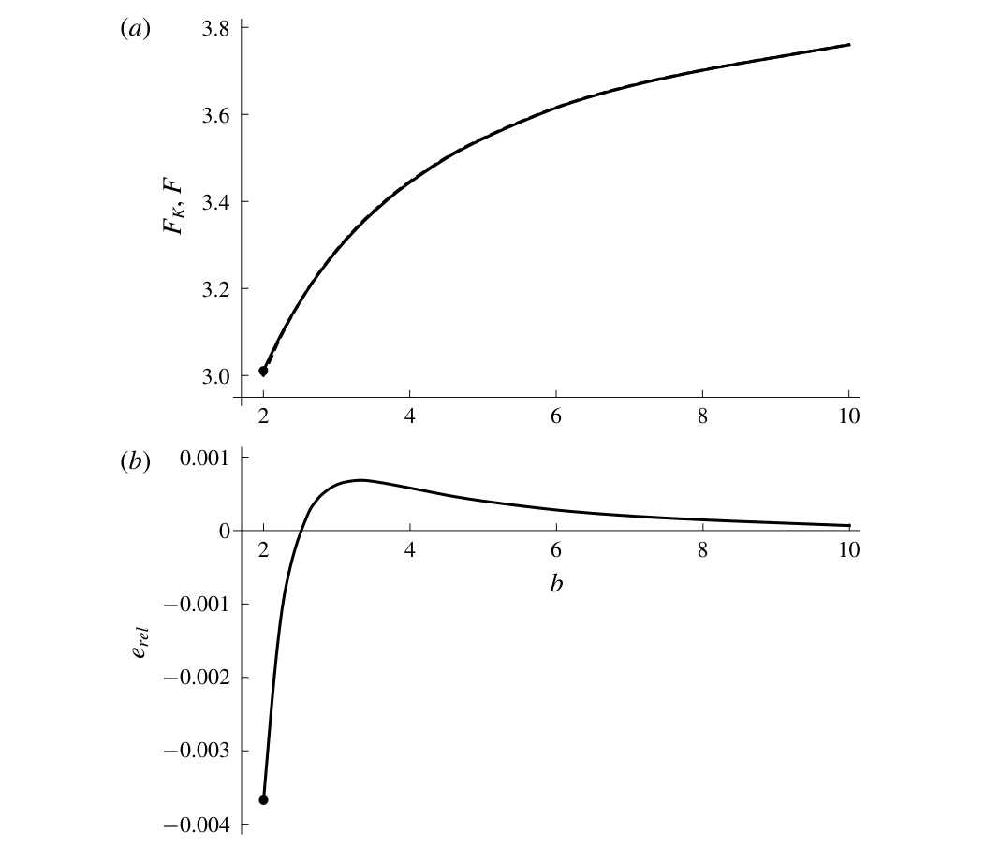

一群液滴蒸发时，谁替谁挡住了扩散通量？
相邻薄液滴抬高彼此周围的蒸气浓度。扩散模型给出了单滴寿命的改变，也预测了环形沉积沿周向的不均匀。
Competitive evaporation of multiple sessile droplets
研究背景
单个 sessile droplet 的蒸发、寿命和 coffee-ring 已经有大量理论与实验工作；但实际应用如打印、喷雾冷却、生化检测和液滴阵列中，液滴往往不是孤立存在。多液滴之间的关键差异是 shielding：一个液滴蒸发出的水汽会提高邻近液滴周围的局部水汽浓度，从而降低邻近液滴的蒸发驱动力。
作者关注的是扩散受限蒸发。气相水汽浓度满足 Laplace 方程，液滴表面为饱和浓度，远场为固定环境浓度；这在数学上对应三维混合边值问题。已有精确解多限于单个圆盘/球冠，复杂几何通常要数值求解。本文沿用 Fabrikant 对多孔膜势流问题的积分变换思想，把多液滴蒸发问题化成积分通量方程，再在液滴相互间距较大的极限下推出显式渐近通量。
研究方法
物理设定
模型考虑 N 个圆形接触线液滴，位于平面 z = 0 上。第 k 个液滴半径为 ak，中心在 (xk, yk)。主要假设是：
- 液滴很薄，主导近似下可视为平面圆盘通量问题；
- 蒸发为扩散受限，气相浓度 c 满足 Laplace 方程；
- 液滴表面浓度为饱和值 csat，远场为 c_infinity；
- 液滴中心间距固定，蒸发只改变接触半径和接触角；
- 局部通量 Jk = -partial c / partial z，在液滴表面求得；
- 正式渐近条件是 ak/rk,n << 1，但作者后续验证显示公式在接近接触时仍然很准。
Figure 1（多液滴几何）：
- 定义第 k 与第 n 个液滴的中心、半径、中心距 rk,n 和相对角度 psi_k,n。
- 它支撑后续通量公式，因为 shielding 项显式依赖每对液滴的距离和方向。
- 注意：Figure 1 是平面几何图，模型没有解析液滴内部流场；内部流动只在 coffee-ring 讨论中通过径向积分通量间接关联。
通量模型
孤立圆盘液滴的基准通量为 J0 = 2 / (pi sqrt(ak^2 - rho^2))，因此在接触线处保留经典平方根奇异性。多液滴情况下，Fabrikant 积分方程给出 Jk 与其他所有液滴通量 Jn 的耦合关系。
作者的主要推进是：在 well-separated droplets 极限下，把积分通量 Fk 和局部通量 Jk 都写成显式表达式。对第 k 个液滴，其他液滴的影响表现为 J0 乘上一个小于 1 的修正括号；括号中的第二项就是 shielding effect，并随其他液滴距离增大而衰减。
对两个相同液滴，半径 a、中心距 b，积分通量为：
F = 4a / [1 + (2/pi) arcsin(a/b)]
这说明当 b 越小，分母越大，单个液滴总蒸发通量越小；当 b -> infinity，F -> 4a，恢复孤立液滴结果。局部通量 J1/J2 的修正项还保留方位角依赖，因此靠近对方液滴的一侧蒸发更弱，远离对方的一侧蒸发更强。
对 N 个正多边形排列的相同液滴，积分通量类似地把 arcsin(a/b) 推广为对所有其他液滴距离 bn 的求和。这个形式很适合做阵列快速估算。
具体结果
结果 1：渐近通量在接近接触时仍然很准

Figure 2（两个相同液滴的积分通量验证）：
- Figure 2a 比较 exact solution FK 与渐近表达式 F。半径 a = 1、中心距 b >= 2，渐近曲线与精确曲线几乎重合。
- FK 随 b 单调增加：b = 2 时 FK 约为 3.011，b -> infinity 时趋近 4。物理意义是距离越远，shielding 越弱，总蒸发通量越接近孤立液滴。
- Figure 2b 给出相对误差：局部最大约 0.068%，接触极限 b = 2 的误差约 0.367%。这解释了为什么虽然模型形式上要求远距离，它仍可用于较近液滴。
Figure 3（两个相同液滴的局部通量验证）：
- 比较 exact solution J1K/J2K 与渐近 J1/J2 的等值线和截线，案例为 a = 1、b = 2.2。
- 结果显示局部通量的方位角变化也被捕捉得很好：两滴相对的一侧通量被压低，背向的一侧通量更接近孤立液滴。
- 作者还尝试过有限差分直接求解原方程，但由于接触线奇异性，使用 O(10^5) 个点仍难以收敛到足够小误差；在该问题上显式渐近模型反而更稳。
结果 2：shielding 延长液滴寿命，且不同蒸发模式有明确公式
作者把液滴高度写成薄球冠近似，体积 V = pi a^3 theta / 4，并用总通量 Fk 控制体积衰减：
d(a_k^3 theta_k)/dt = -4 F_k / pi
对两个相同液滴，考虑三种常用蒸发模式：
- CR mode：constant radius，接触线钉扎，半径固定，接触角下降；
- CA mode：constant angle，接触角固定，半径缩小；
- SS mode：stick-slide，先 CR 到达 receding contact angle theta*，之后 CA。
Figure 4a（两个液滴的寿命）：
- 对固定 theta*，tCR、tCA、tSS 都随 b 增大而下降并趋向孤立液滴寿命；因为 b 越大，shielding 越弱。
- 对固定 b，寿命随 theta* 增大而增加，并满足 tCR <= tSS <= tCA。
- 接触极限下 CR 模式寿命延长到孤立 CR 寿命的 4/3；CA 模式接触极限约为孤立 CA 寿命的 1.218 倍。
- 一个反直觉点：对两个液滴，接触液滴在 CR 模式下的寿命仍短于孤立液滴在 CA 模式下的寿命，说明蒸发模式本身的影响可大于 shielding。
Figure 4b（N = 5 正多边形阵列寿命）：
- N = 5 阵列的定性行为与两个液滴相似：距离越近寿命越长，SS 在 CR 和 CA 之间。
- 但 “touching CR 仍短于 isolated CA” 是 N = 2 的特殊情况；阵列中多邻居 shielding 更强，结论可能改变。
结果 3：shielding 会改变 coffee-ring 的方位角分布
作者定义径向积分蒸发通量 Rk(phi) = integral_0^ak Jk rho d rho，用它估计液滴内部径向补偿流强弱。对含颗粒液滴，径向流越强的方向，接触线附近最终残留越多，因此 Rk(phi) 可作为 coffee-ring 非均匀性的近似指标。
Figure 5（两个液滴的径向积分通量 R1）：
- 对两个相同液滴，R1 随方位角 phi 改变；液滴越近，方位角差异越明显。
- 靠近另一滴的一侧受 shielding 最强，R1 较小，预期颗粒残留较少；远离另一滴的一侧蒸发和径向补偿流更强，预期残留更多。
- 当 b 增大到 10，R1 逐渐接近孤立值 R0 = 2a/pi。
- caveat：Rk 不能完全决定沉积，因为粒子扩散、方位角流和真实接触线动力学也会影响最终图案；但作为第一阶判断很有用。
结果 4：模型能解释七液滴 I 形阵列实验
作者比较 Khilifi et al. 2019 的七个水滴实验：水滴在 sapphire substrate 上、初始温度 20 degC、环境 21 degC、50% RH；孤立液滴显示 SS 模式，初始接触角约 80 deg，后退接触角约 36 deg。七滴呈近似 I 形，单滴半径约 7.5e-4 m，体积约 7e-10 m^3，间距约 2e-4 m。
Figure 6（七液滴平面形状随时间）：
- 模型预测轮廓与实验边界在 3 s、1200 s、1300 s、1600 s、1700 s、1760 s 六个时刻整体吻合。
- I 形四个角上的液滴 shielding 最弱，因此蒸发最快；中央液滴 shielding 最强，因此寿命最长。
- 主要差异出现在 1700 s：实验中顶部和底部两个液滴已经消失，而模型预测还未完全蒸发。但作者认为这属于末期半径快速变化阶段的小偏差。
Figure 7（七液滴直径和接触角演化）：
- 将液滴分成三类：四个角液滴、顶部/底部两个液滴、中央液滴；三类寿命依次增加。
- 模型对直径和接触角平均演化都给出相当好的趋势匹配。
- 由于实验初始接触角较大，而理论假设薄液滴，仍能得到这种匹配，说明该渐近模型对工程估算有较强鲁棒性。
关键机制
shielding 的物理链条
单个液滴蒸发时，液滴表面到远场之间有水汽浓度梯度，扩散通量由这个梯度控制。多个液滴靠近时，每个液滴释放的水汽都会抬高相邻液滴附近的局部水汽浓度，使相邻液滴表面到周围空气的浓度差变小。结果是：
邻近液滴 -> 局部水汽浓度升高 -> 扩散驱动力下降 -> 蒸发通量降低 -> 寿命延长
通量的空间非均匀性
shielding 不只改变总蒸发率，也改变同一液滴上不同方位角的局部通量。两个液滴相对的一侧蒸发更弱，背向的一侧更强。这会驱动内部补偿流和颗粒沉积的方位角不均匀，形成非对称 coffee-ring。对含颗粒/溶质液滴，最终沉积图案不应只用平均蒸发率解释。
模型的实用边界
适用范围与局限
- 正式渐近条件是液滴相互远离；虽然两个液滴接触极限仍与精确解很接近，但这不自动保证所有非规则密集阵列都同样准确。
- 模型把液滴视为薄液滴。实验初始接触角约 80 deg 时仍有不错结果，但从严格理论看已超出小接触角假设。
- 模型只处理扩散受限气相传质，没有加入温度场、蒸发冷却、Marangoni、自然对流或气流扰动。若实验中这些效应强，shielding 公式只能给出基线。
- coffee-ring 讨论基于径向积分通量，未直接求解颗粒输运、粒子扩散、接触线钉扎/滑移和方位角内部环流。
- 文中假设液滴中心距固定；若液滴因合并、滑移、接触线形变或基底润湿梯度移动，需要扩展模型。